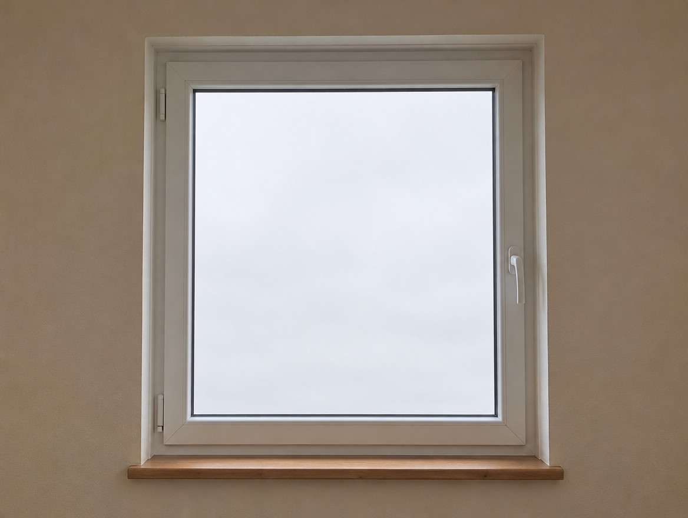
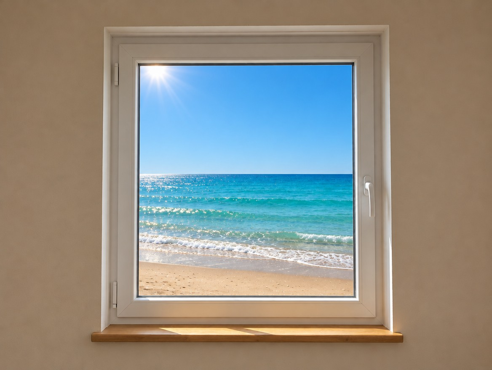
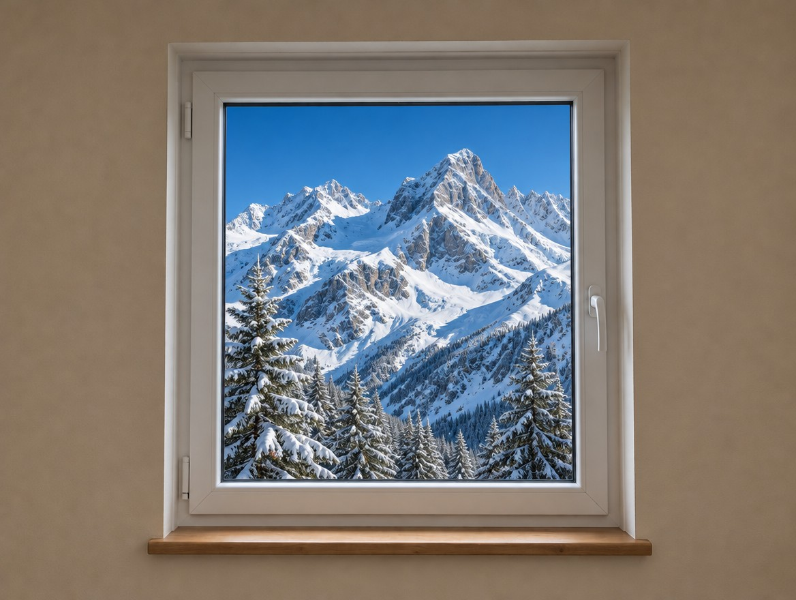
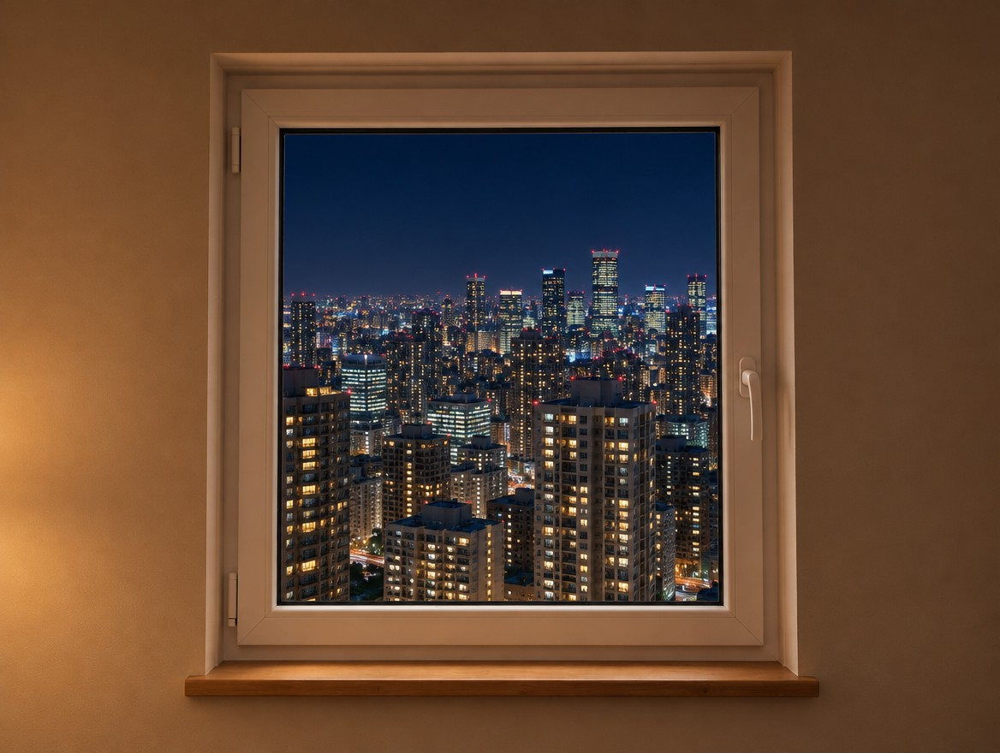
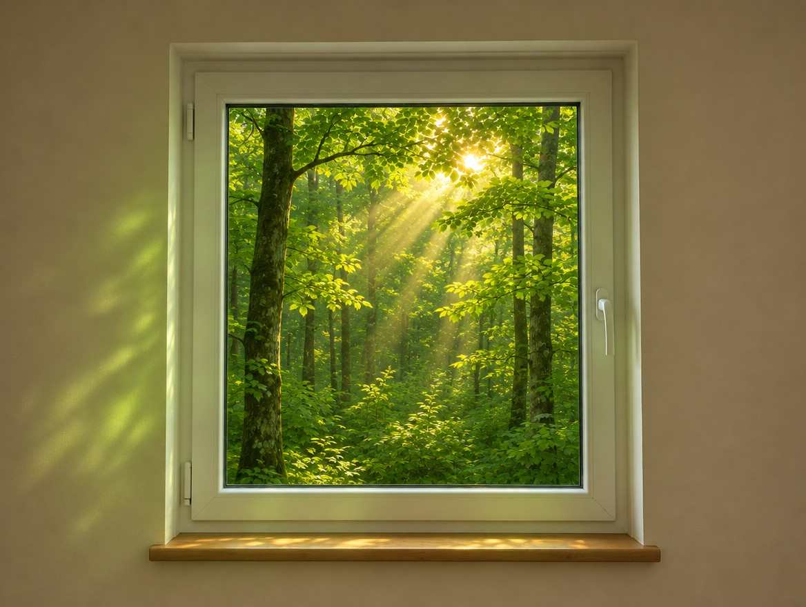
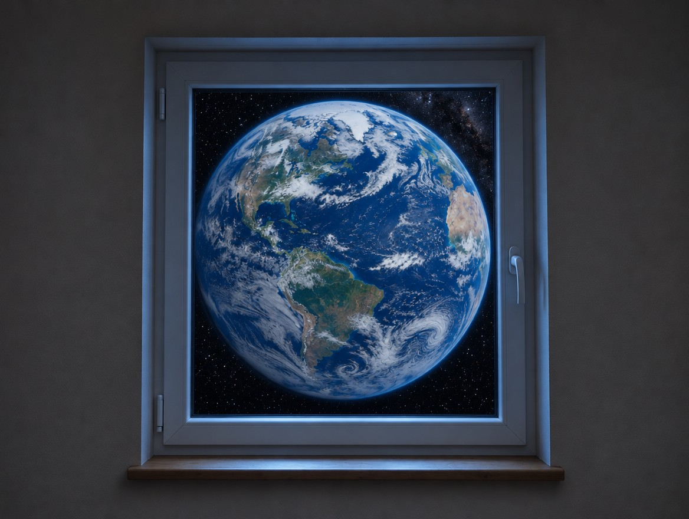

AI 문방구 · 창밖 풍경 5
창문 하나
→ 창밖 풍경 5
댓글로 신청해주셔서 고마워요. 영상 속 풍경은 전부 힉스필드(GPT Image 2.6)에 흐린 창문 사진 한 장을 넣고 창밖 문장만 바꿔 만든 결과예요. 방 사진 분위기를 바꾸거나 블로그 표지 만들 때 써보세요.
BASE원본 창문 사진 (전)

01Ocean
푸른 바다
에메랄드 물빛과 모래사장, 쏟아지는 햇빛.
전

후The exact same room, same white window frame, same beige wall and wooden sill, same framing and camera angle. Only the view outside the window changes: a bright turquoise ocean with gentle waves and a sandy beach under a clear blue summer sky, sunlight pouring in. Realistic photo, no text, no logos, no people.
02Snowy peaks
눈 덮인 산
창을 가득 채운 하얀 봉우리와 눈 쌓인 소나무.
전

후The exact same room, same white window frame, same beige wall and wooden sill, same framing and camera angle. Only the view outside the window changes: dramatic snow-covered alpine mountain peaks close up, pine trees with snow, crisp blue sky, cold bright light. Realistic photo, no text, no logos, no people.
03City night
빌딩 불빛
고층에서 내려다본 야경. 방 안은 따뜻한 스탠드 조명.
전

후The exact same room, same white window frame, same beige wall and wooden sill, same framing and camera angle, but it is night: the room is dim with warm lamp light. Only the view outside changes: a dense high-rise city skyline at night seen from a high floor, thousands of glowing windows and lights, deep blue night sky. Realistic photo, no readable signs, no text, no logos, no people.
04Forest
나뭇잎 사이 햇살
창 바로 앞 숲. 초록 빛이 벽까지 번져요.
전

후The exact same room, same white window frame, same beige wall and wooden sill, same framing and camera angle. Only the view outside the window changes: a lush green forest right outside, tall trees and fresh leaves, golden sun rays streaming through the leaves, green light spilling into the room. Realistic photo, no text, no logos, no people.
05Space
창밖의 지구
우주 정거장 창처럼 별빛과 지구.
전

후The exact same room, same white window frame, same beige wall and wooden sill, same framing and camera angle, now dimly lit by blue earthlight. Only the view outside the window changes: outer space, black sky full of stars and a large round planet Earth with blue oceans and white clouds filling most of the window, like a window on a space station. Realistic photo, no text, no logos, no people.
HOW내 사진으로 하는 법
창문이 정면으로 크게 나오게 찍은 사진을 올리고 [ ]만 바꾸세요. "same framing"을 넣어야 창틀과 벽이 그대로 남아요. 밤 풍경이면 방 조명 문장도 같이 바꿔주세요.
The exact same room, same window frame, same wall, same framing and camera angle. Only the view outside the window changes: [풍경 묘사]. Realistic photo, no text, no logos, no people.